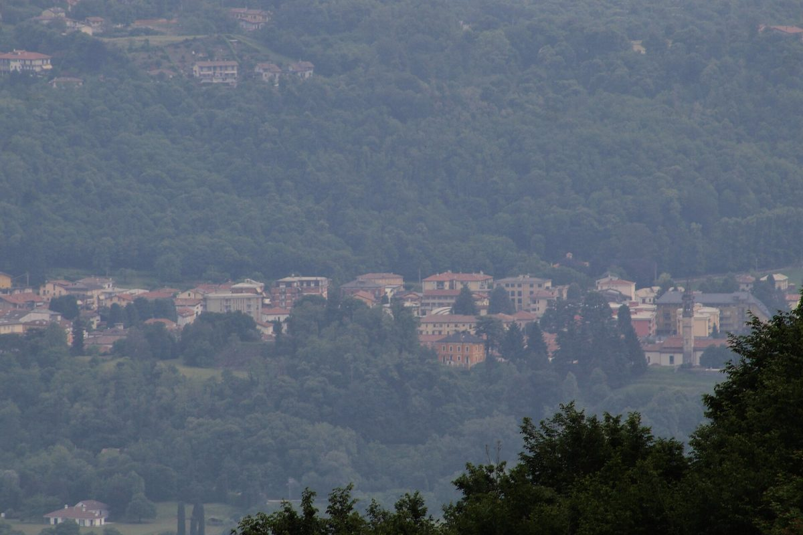

이탈리아 레코 도 9개 시·군 재생에너지공동체 '시네르지아 알타 브리안차', 운영위원회 꾸려…인센티브 사회 활동 몫 쓰임에 구속력 있는 의견

시 3곳·소비자 조합원·사회적기관 대표 5명으로 구성, 구역 조합원 28명·계량 지점 99곳…GSE 활성화 심사 중, 생산자 후보 7곳 합류하면 설비 466kW 넘어
이탈리아 롬바르디아주 레코 도의 9개 코무네(기초지자체)를 묶은 재생에너지공동체(CER) 구역 '시네르지아 알타 브리안차'가 10월 29일 시로네에서 열린 조합원 총회에서 5명으로 된 지역 운영위원회를 뽑았다. 위원회에는 설립 조합원인 시로네·돌차고·카스텔로디브리안차 시의 대표 3명과 소비자 조합원 1명, 제3섹터 기관인 아실로 비안코니 대표 1명이 들어갔고, 코디네이터는 시로네 시 대표 에르네스토 비가노가 맡는다. 위원회는 국가 운영기관 GSE가 주는 인센티브 가운데 사회 활동에 쓰는 몫의 쓰임과 구역 규정에 대해 재단 이사회에 구속력 있는 의견을 내고, 남는 몫의 쓰임에 대해서는 설립자 회의에 권고 의견을 낸다. 이 구역에는 지금 조합원 28명(생산·소비자 2명, 설비 합계 22.55kW / 소비자 26명)과 전기 계량 지점 99곳이 있으며, 시 2곳과 개인 5명 등 생산·소비자 후보 7곳이 들어오면 쓸 수 있는 설비가 466kW를 넘는다. 구역 활성화 신청은 2026년 4월 8일 GSE에 냈으나 아직 심사 중이다. 공동체를 추진하는 폰다치오네 시네르지아에는 베르가모·레코·몬차브리안차 3개 도에서 지자체 96곳과 참여 조합원 810명이 가입했으며, 위원회는 가입비가 없고 전기 공급사를 바꿀 필요도 없다며 주민과 중소기업, 사회적기관의 참여를 호소했다.
시민에너지 관점
지자체 셋과 주민 조합원, 사회적기관이 한 자리에 앉아 인센티브의 사회적 쓰임을 정하게 된 것은, 에너지공동체가 전기를 나누는 장치를 넘어 지역의 공동 재산을 함께 관리하는 자치 조직이 될 수 있다는 점을 보여 준다. 위원 다섯 가운데 셋이 지자체 대표여서 주민 공동체라기보다 행정 사업에 가깝다는 우려가 나올 수 있지만, 가입비 없이 누구나 들어올 수 있게 문을 열고 주민과 제3섹터에도 자리를 준 것은 공공이 마중물을 붓고 주민이 주인으로 자라도록 길을 낸 셈이다. 독일의 에너지협동조합들이 출자액과 관계없이 조합원 한 사람에게 한 표를 주는 원칙으로 운영되듯, 지역 에너지의 이익을 어디에 쓸지 정하는 자리에서 주민과 사회적경제 조직이 실제 결정권을 가져야 그 이익이 지역에 머문다. 국내 햇빛소득마을과 공공부지 태양광 사업도 설비 계획만큼이나 수익의 사회적 쓰임을 누가 어떻게 정할지 처음부터 규약에 담아야 한다.
출처: Casateonline 2026-11-02 표기 없음 원문 보기
イタリア・レッコ県9自治体の再生可能エネルギー共同体「シネルジア・アルタ・ブリアンツァ」が運営委員会を設置…インセンティブの社会活動分の使い道に拘束力ある意見
市3つ・消費者組合員・社会的機関の代表5人で構成、区域の組合員28人・計量地点99か所…GSEが稼働申請を審査中、生産者候補7か所が加われば設備は466kW超に
イタリア・ロンバルディア州レッコ県の9つのコムーネ（基礎自治体）をまとめた再生可能エネルギー共同体（CER）の区域「シネルジア・アルタ・ブリアンツァ」が、10月29日にシローネで開いた組合員総会で、5人からなる地域運営委員会を選んだ。委員会には設立組合員であるシローネ、ドルツァーゴ、カステッロ・ディ・ブリアンツァの各市の代表3人と消費者組合員1人、第三セクター機関アジーロ・ビアンコーニの代表1人が入り、コーディネーターはシローネ市代表のエルネスト・ヴィガーノ氏が務める。委員会は、国の運営機関GSEが交付するインセンティブのうち社会活動に充てる分の使い道と区域の規程について財団理事会に拘束力のある意見を出し、余剰分の使い道については設立者会議に助言的な意見を出す。この区域には現在、組合員28人（生産消費者2人、設備合計22.55kW／消費者26人）と電力計量地点99か所があり、市2つと個人5人の生産消費者候補7か所が加われば、使える設備は466kWを超える。区域の稼働申請は2026年4月8日にGSEへ提出したが、まだ審査中だ。共同体を推進するシネルジア財団には、ベルガモ、レッコ、モンツァ・ブリアンツァの3県で自治体96か所と参加組合員810人が加入しており、委員会は加入費がかからず電力会社を替える必要もないとして、住民や中小企業、社会的機関に参加を呼びかけた。
市民エネルギーの視点
3つの自治体と住民組合員、社会的機関が同じ席でインセンティブの社会的な使い道を決めることになったのは、エネルギー共同体が電気を分け合う仕組みを超え、地域の共有財産をともに管理する自治組織になりうることを示している。委員5人のうち3人が自治体代表のため、住民の共同体というより行政の事業に近いとの懸念もありうる。しかし加入費なしで誰でも参加できるよう門戸を開き、住民と第三セクターにも席を設けたことは、公共が呼び水を注ぎ、住民が担い手として育つ道を開いたといえる。ドイツのエネルギー協同組合が出資額にかかわらず組合員1人に1票を与える原則で運営されているように、地域エネルギーの利益の使い道を決める場で住民と社会的経済の組織が実際の決定権を持ってこそ、その利益は地域にとどまる。韓国の「日差し所得村」や公共用地の太陽光事業も、設備計画と同じくらい、収益の社会的な使い道を誰がどう決めるかを最初から規約に盛り込むべきだ。
出典: Casateonline 2026-11-02 記者名なし 原文を読む
意大利莱科省9个市镇的可再生能源社区“西内尔贾·上布里安扎”成立运营委员会…对激励金中社会活动份额的用途拥有约束性意见权
由3个市、消费者成员和社会机构代表共5人组成，区域成员28名、计量点99个…GSE仍在审查启用申请，7个生产者候选加入后装机将超过466kW
由意大利伦巴第大区莱科省9个市镇（基层地方政府）组成的可再生能源社区（CER）区域“西内尔贾·上布里安扎”，在10月29日于西罗内举行的成员大会上选出了由5人组成的地区运营委员会。委员会成员包括创始成员西罗内、多尔恰戈和卡斯泰洛迪布里安扎3个市的代表，1名消费者成员，以及第三部门机构阿西洛·比安科尼的1名代表，协调人由西罗内市代表埃内斯托·维加诺担任。对于国家运营机构GSE发放的激励金中用于社会活动的份额如何使用以及区域规章，委员会向基金会理事会提出具有约束力的意见；对于盈余份额的用途，则向创始人会议提出建议性意见。该区域目前有成员28名（产消者2名，装机合计22.55kW；消费者26名），电力计量点99个；若包括2个市和5名个人在内的7个产消者候选加入，可用装机将超过466kW。区域启用申请已于2026年4月8日提交GSE，目前仍在审查中。推动该社区的西内尔贾基金会在贝加莫、莱科、蒙扎和布里安扎3个省已有96个地方政府和810名参与成员加入，委员会表示加入无需费用、也不必更换电力供应商，呼吁居民、中小企业和社会机构参与。
市民能源视角
三个地方政府与居民成员、社会机构坐在一起决定激励金的社会用途，说明能源社区不只是分享电力的机制，还可以成为共同管理地方公共财产的自治组织。由于5名委员中有3名是地方政府代表，有人可能担心它更像行政项目而非居民共同体；但它不收入会费、向所有人敞开大门，并给居民和第三部门留出席位，等于由公共部门先注入引水，再让居民成长为真正的主人。正如德国的能源合作社无论出资多少都坚持一名社员一票的原则，只有在决定地方能源收益用途的场合让居民和社会经济组织拥有实际决定权，收益才会留在当地。韩国的“阳光收入村”和公共用地光伏项目，也应像重视设备规划一样，从一开始就在章程中写明由谁、以何种方式决定收益的社会用途。
来源: Casateonline 2026-11-02 未署名 查看原文
Renewable energy community of nine Lecco municipalities, Sinergia Alta Brianza, forms a steering committee with a binding say on the social share of incentives
Five members from three town councils, a consumer member and a social organisation; 28 members and 99 metering points in the area; activation still under GSE review, and installed capacity would pass 466kW if seven prospective producers join
Sinergia Alta Brianza, the renewable energy community (CER) area covering nine comuni in the province of Lecco in Italy's Lombardy region, elected a five-member local steering committee at a members' assembly in Sirone on October 29. The committee brings together representatives of three founding municipalities, Sirone, Dolzago and Castello di Brianza, one consumer member and one representative of the third-sector body Asilo Bianconi, with Sirone's representative Ernesto Viganò serving as coordinator. It will give binding opinions to the foundation's board on the area's rules and on how the share of incentives from the national operator GSE reserved for social activities is spent, and advisory opinions to the founders' assembly on the use of the surplus share. The area currently has 28 members, two prosumers with 22.55kW of combined capacity and 26 consumers, covering 99 metering points, and if seven prospective prosumers, two municipalities and five individuals, join, available capacity would exceed 466kW. The application to activate the area was filed with GSE on April 8, 2026 and is still under review. Fondazione Sinergia, which runs the community, has signed up 96 local authorities and 810 participating members across the provinces of Bergamo, Lecco and Monza and Brianza, and the committee urged residents, small businesses and social organisations to join, noting that membership is free and does not require changing electricity supplier.
Citizen Energy View
Having three municipalities, a resident member and a social organisation sit together to decide the social use of incentives shows that an energy community can be more than a device for sharing power; it can become a self-governing body that jointly manages a local common asset. With three of the five seats held by municipal representatives, some may worry that this is closer to a council programme than a residents' community, but opening the door to anyone at no cost and giving residents and the third sector a seat means the public sector is priming the pump so that residents can grow into owners. Just as German energy cooperatives give each member one vote regardless of how much they invest, the benefits of local energy stay local only when residents and social-economy organisations hold real decision-making power over how they are used. Korea's sunshine income villages and solar projects on public land should likewise write into their rules from the start who decides the social use of revenue and how, with as much care as they give to the equipment plans.
Source: Casateonline 2026-11-02 No byline Read the original